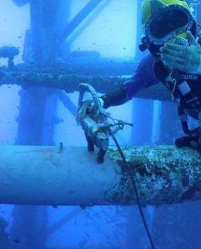

24 Years Of Experience
Thanks to our years of experience, we can certainly declare that we are the experts when it comes to underwater inspection services. We've been working for more than twenty years, so you can count on us to finish your project.

